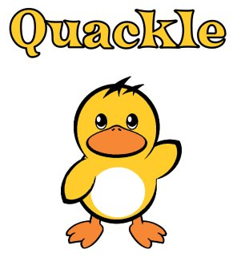

|  | How Quackle Plays ScrabbleBy Jason Katz-Brown and John O'Laughlin |
The conniveries of each block are explained below.
This block takes a rack and board as input and very quickly outputs a list of all possible plays that can be made. Quackle's ultrafast move generator uses the Scrabble lexicon converted into a GADDAG. The GADDAG data structure was originally designed by Steven A Gordon, and uses the move generation algorithm he outlined in A Faster Scrabble Move Generation Algorithm).
This block takes a list of moves as input and very quickly outputs a list of moves ordered by a rough guess at how strong they are. For each play, this "static evaluation", so called because there is no look-ahead involved, is simply the score of the play plus an estimated "leave value" of the letters left on the player's rack after making the play. For instance, if the rack is ACEENOR, and Quackle wants to statically evaluate a play of OCEAN where it scores 19 on the board, the result is 19 plus the value of the leave ER. This leave value is gleaned from a table lookup into a large precomputed database of all possible one to six letter leaves. Here is a typical sequence of entries:
| Leave | Value |
|---|---|
| EQYZ | -4.68 |
| EQZ | -4.12 |
| ER | 4.79 |
| ERR | 0.39 |
| ERRR | -9.02 |
This block takes a list of moves as input (let's call this the candidate list) and slowly outputs, for each candidate play, hypothetical future positions that are reached after the following sequence of events:
This block takes many future positions for each candidate and very quickly outputs a list of plays ordered by estimated win percentage. For each future position, Quackle does a simple table lookup into a precomputed database that guesses the current player's chance of winning the game based on how many points he is ahead or behind and how many tiles are left to be played in the game (the sum of the 7 tiles on the opponent's rack and the number of tiles left in the bag). For each candidate, these win percentage estimates are averaged over all the future positions that started out with that candidate.
Here is a sample of the win percentage estimation database:| Point differential | Number of tiles left | Estimated win probability |
|---|---|---|
| -82 | 65 | 0.203748 |
| -82 | 66 | 0.20625 |
| -82 | 67 | 0.208717 |
| ... | ||
| 9 | 15 | 0.784516 |
| 9 | 16 | 0.779248 |
| 9 | 17 | 0.774146 |
Let's say we're trying to guess the win percentage of the OCEAN play from before after our first iteration of simulation. Recall the point differential after iteration 1 was -82.12. Let's assume that after the last play of that iteration, PROXY, there were 66 tiles remaining in the game. Then we'll estimate that if the resulting game from OCEAN's iteration 1 were played to completion, the current player would win about 20.6% of the time.
The database of estimated win probabilities was made by analyzing the distribution of wins over many Quackle versus Quackle games.
This kind of win-percentage-based analysis is critical in a Scrabble AI when needing to erase a large deficit or protect a lead. For instance, when down by 70 points late in the game, a bingo is usually necessary to catch up. If the current player ever bingos in an iteration of a candidate's simulation the estimated win percentage of that candidate is boosted mightily, while most other iterations will have an estimated win percentage of about zero. After averaging the estimated win percentages of all iterations for a candidate, the plays that have the greatest chance of a future bingo, will come out on top as desired.
Copyright (C) 2005-2007 Jason Katz-Brown and John O'Laughlin.